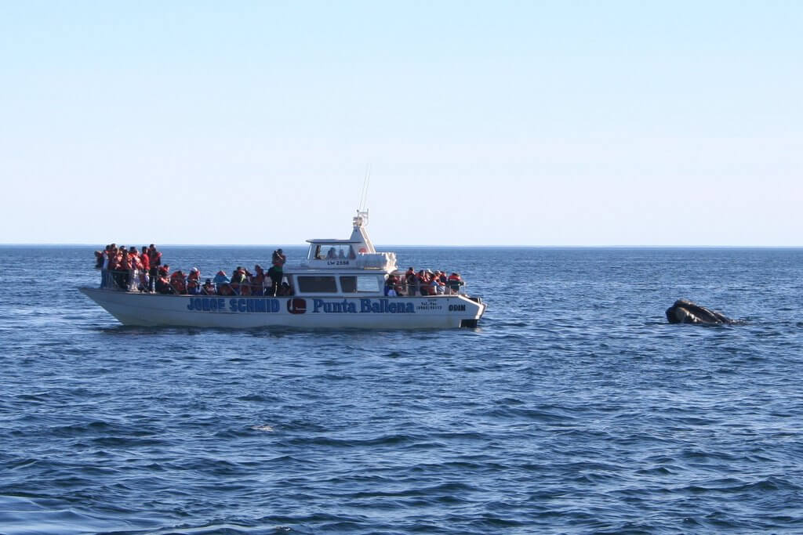
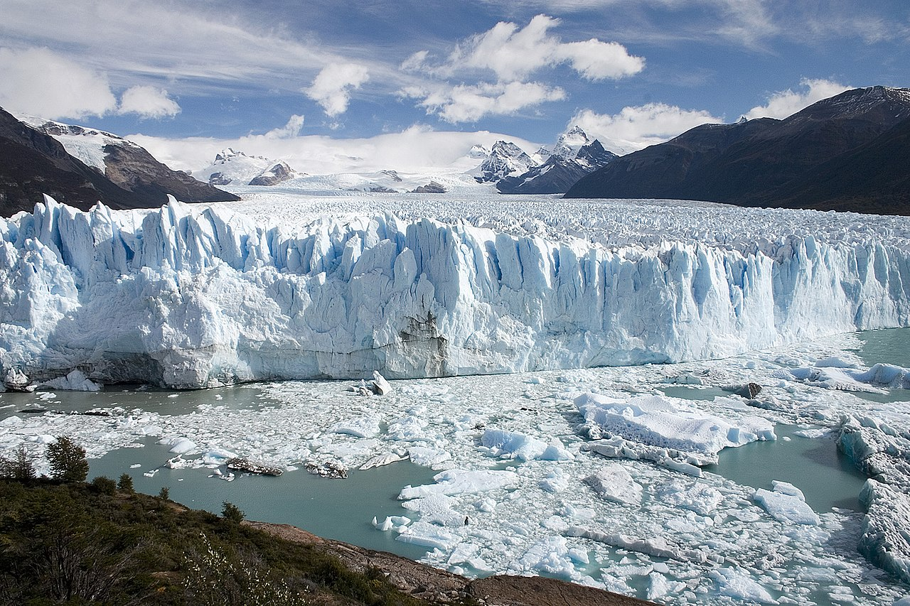
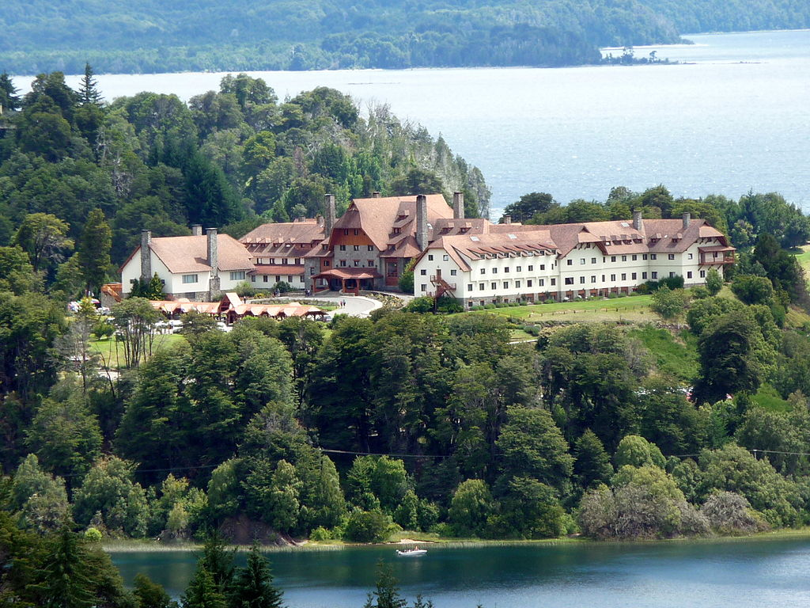

Guía de viajes Argentina
Inicio
Perfil
Ayuda
Destinos:
Patagonia
Cuyo
Region Pampeana
Noroeste
Litoral
Patagonia
Península de Valdés, la reserva natural de fauna marina de Sudamérica. Chubut.

El glaciar Perito Moreno, declarado Patrimonio de la Humanidad por la Unesco en 1981.

El Hotel Llao Llao en San Carlos de Bariloche. La ciudad es el mayor destino turístico de toda la Patagonia.

El Monte Fitz Roy o Chaltén, en la frontera entre Argentina y Chile.